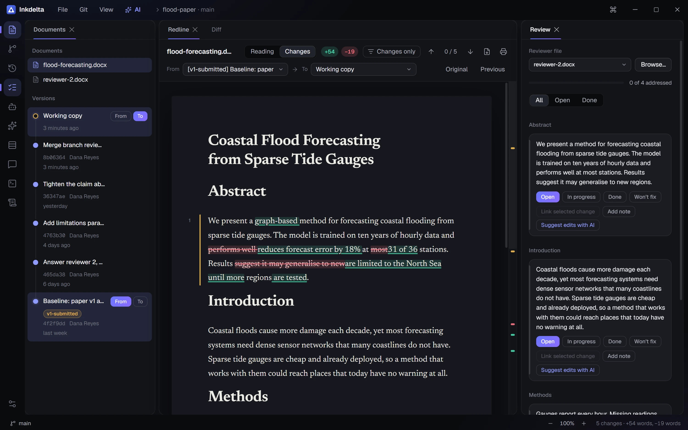

Download Inkdelta
Installer .exe
MSI package .msi
macOS
For your computerLinux
For your computerLooking for the latest version…
Windows is the tested one; macOS and Linux have not been tried yet. Not code-signed: if Windows warns, choose More info, then Run anyway. Inkdelta then updates itself, and asks first.

Compare
Any two versions, word by word.
Edit
Click, type, save to the .docx.
Review
Every reviewer comment, checked off.
Ask
You choose what the AI sees.
Run
A real terminal in your project.
Commit
A full Git client.
Style
Eight themes. Six accents.
Accent